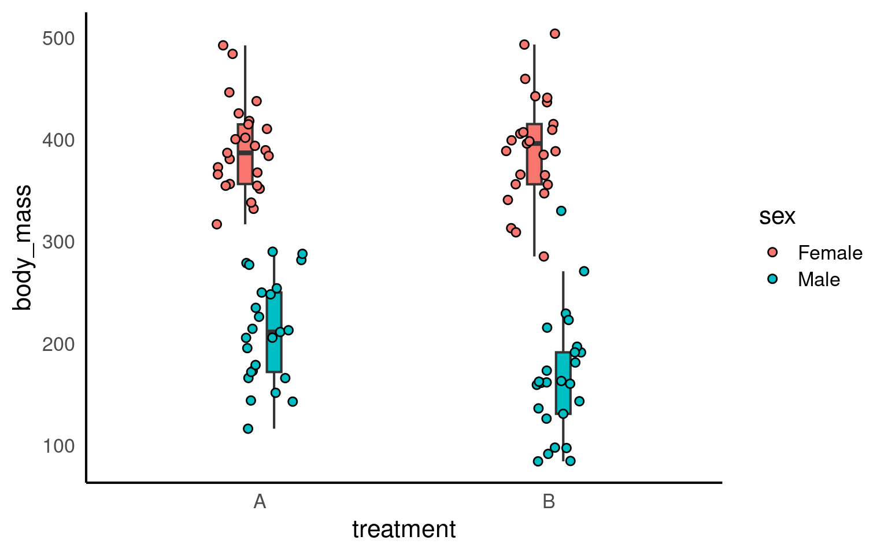
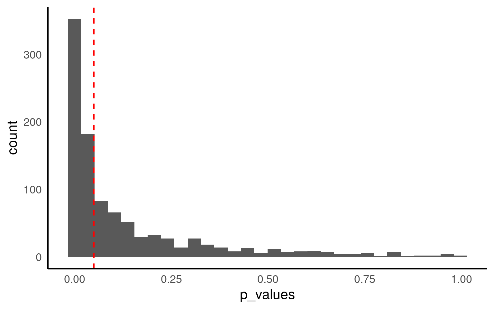
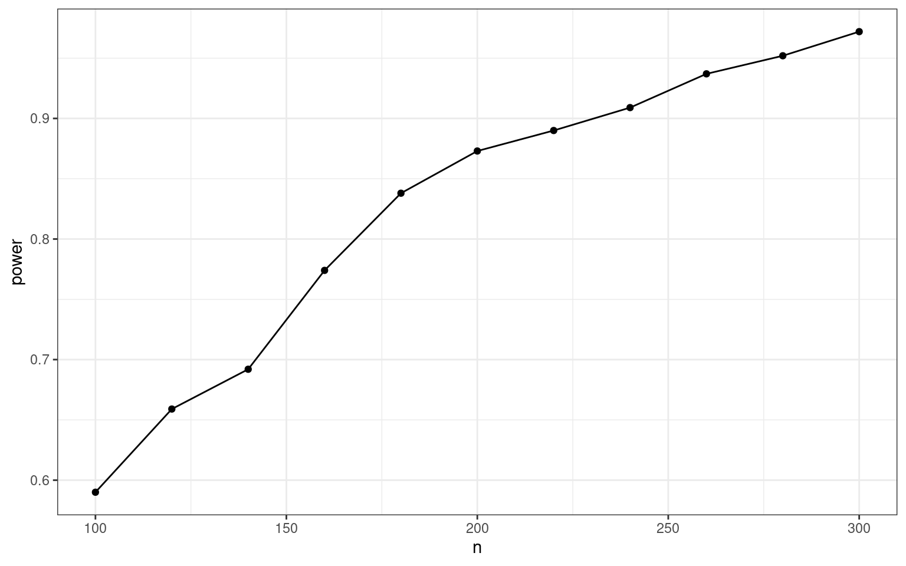
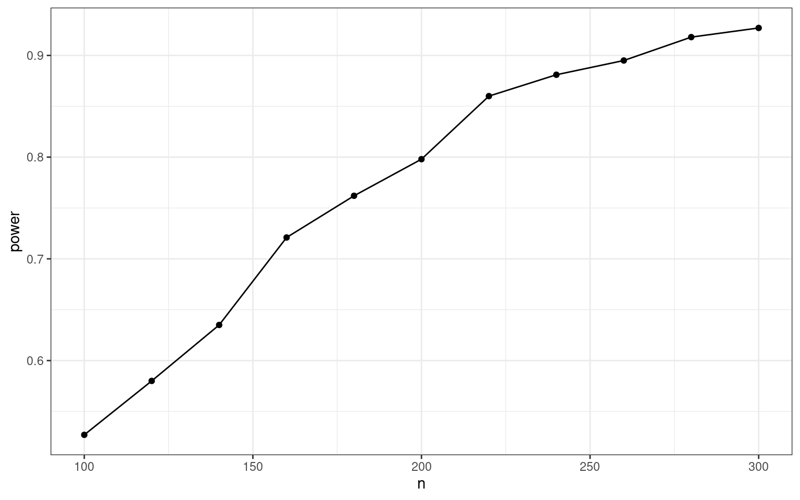
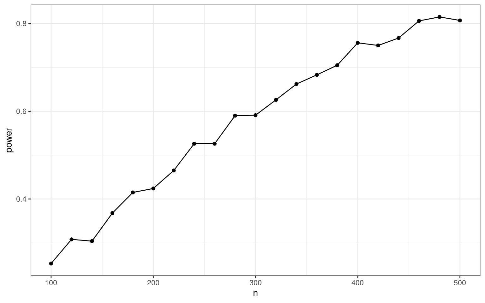
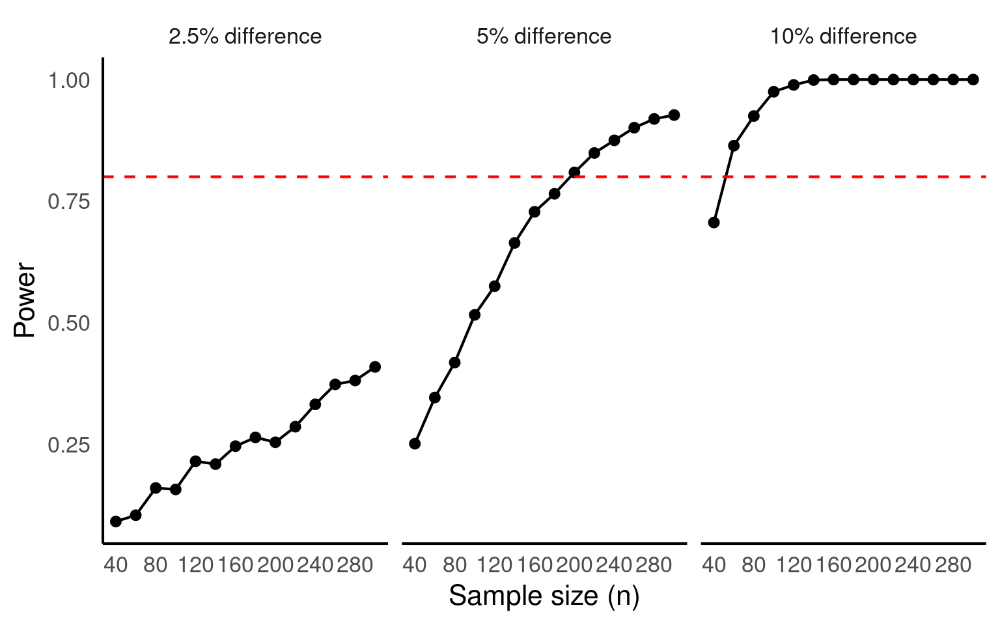

set.seed(38596)
# Sample size and factors
n <- 100
treatment <- factor(rep(c("A", "B"), each = n/2)) # 50 A, 50 B
sex <- factor(rep(c("Male","Female"), times = n/2))
# --- Specify the true model on the MEAN scale ---
# Using default treatment (dummy) coding with baseline = treatment A, sex Male
beta_0 <- 400 # mean for (A, Male)
beta_trtB <- -20 # difference (B - A) among Males when no interaction in the true DGP
beta_male <- -200 # difference (Female - Male) in A when no interaction
beta_int <- 0 # interaction: extra effect for (B,Female) beyond main effects
# Build the model matrix for ~ treatment * sex (includes intercept, both mains, and interaction)
X <- model.matrix(~ treatment + sex)
# Pack coefficients in the order of colnames(X)
coef_true <- c(beta_0, beta_trtB, beta_male)
names(coef_true) <- colnames(X)
# Mean for each observation implied by predictors
mu <- as.vector(X %*% coef_true)
# --- Residual SD goes here (this is where you include sd) ---
sigma <- 50
body_mass <- rnorm(n, mean = mu, sd = sigma)
dat <- data.frame(body_mass, treatment, sex)21 Power analysis
21.1 Power
if you want to plan a study with 80% power, a power analysis will answer the question:
“If I were to repeat my experiment many thousands of times, what sample size will allow me to reject the null hypothesis on 80% of these occasions?”
21.1.1 Why do we need to understand statistical power?
When we compare treatments, statistical power determines how likely a study is to detect a real difference if one exists. Studies with low power risk producing results that are misleading or inconclusive. In practice, insufficient power exposes researchers to several key mistakes:
False negatives (Type II errors): real treatment effects go undetected, leading to the false conclusion that treatments are equivalent.
Higher false discovery rates: significant results in underpowered studies are more likely to be false positives.
Unstable or inflated effect sizes: The less power we have the more exaggerated the apparent effects of false discoveries. All estimates are unreliable.
Wasted resources: underpowered research consumes effort and participants without yielding clear insight.
21.2 Simulate!
Once we committed to an equation with concrete parameter values, we can simulate data for a sample of, say n = 100 samples
Simply write down the equation and add random normal noise with the rnorm() function.
Note
Note that the rnorm function takes the standard deviation (not the variance).
We set a seed so that the generated random numbers are reproducible:
21.2.1 Variance
For sensible measures of variance we really need some ground truthing data - pilot studies or measures from non-treatment populations
21.2.2 Check the data
Let’s plot our simulated data:

Let’s assume that we collected and analyzed this specific sample – what would have been the results?
Call:
lm(formula = body_mass ~ treatment + sex, data = dat)
Residuals:
Min 1Q Median 3Q Max
-95.570 -34.858 -3.387 30.169 152.054
Coefficients:
Estimate Std. Error t value Pr(>|t|)
(Intercept) 402.793 9.186 43.850 <2e-16 ***
treatmentB -21.819 10.607 -2.057 0.0424 *
sexMale -202.883 10.607 -19.128 <2e-16 ***
---
Signif. codes: 0 '***' 0.001 '**' 0.01 '*' 0.05 '.' 0.1 ' ' 1
Residual standard error: 53.03 on 97 degrees of freedom
Multiple R-squared: 0.7923, Adjusted R-squared: 0.7881
F-statistic: 185 on 2 and 97 DF, p-value: < 2.2e-16As you can see, in this simulated sample (based on a specific seed), the treatment effect is marginally significant (p < .05). But how likely are we to detect an effect with a sample of this size?
21.3 Doing the power analysis
Now we need to repeatedly draw many samples and see how many of the analyses would have detected the existing effect. To do this, we put the code from above into a function called sim1. We coded the function to either return the focal p-value (as default) or to print a model summary (helpful for debugging and testing the function). This function takes two parameters:
ndefines the required sample size treatment_effect defines the treatment effect in the raw scale (i.e., reduction in body mass)We then use the
replicatefunction to repeatedly call thesimfunction for 1000 iterations.
sim1 <- function(n=100, treatment_effect=-20, print=FALSE) {
# Sample size and factors
n <- n
treatment <- factor(rep(c("A", "B"), each = n/2)) # 50 A, 50 B
sex <- factor(rep(c("Male","Female"), times = n/2))
# --- Specify the true model on the MEAN scale ---
# Using default treatment (dummy) coding with baseline = treatment A, sex Male
beta_0 <- 400
beta_trtB <- treatment_effect # argument of interest
beta_male <- -200
beta_int <- 0
# Build the model matrix for ~ treatment * sex (includes intercept, both mains, and interaction)
X <- model.matrix(~ treatment + sex)
# Pack coefficients in the order of colnames(X)
coef_true <- c(beta_0, beta_trtB, beta_male)
names(coef_true) <- colnames(X)
# Mean for each observation implied by predictors
mu <- as.vector(X %*% coef_true)
# --- Residual SD goes here (this is where you include sd) ---
sigma <- 50
body_mass <- rnorm(n, mean = mu, sd = sigma)
dat <- data.frame(body_mass, treatment, sex)
# Fit models
m_main <- lm(body_mass ~ treatment + sex, data = dat) # main effects only
# this lm() call should be exactly the function that you use
# to analyse your real data set
p_value <- summary(m_main)$coefficients["treatmentB", "Pr(>|t|)"]
if (print==TRUE) print(summary(res))
else return(p_value)
}How many of our 1000 virtual samples would have found the effect?

Only 52% of samples with the same size of n=100 result in a significant p-value.
21.4 Sample size planning
Now we know that a sample size of 100 does not lead to a sufficient power. But what sample size would we need to achieve a power of at least 80%? In the simulation approach you need to test different n until you find the necessary sample size. We do this by wrapping the simulation code into a loop that continuously increases the n. We then store the computed power for each n.
n this simulation-based power analysis, we estimate the probability of detecting a true treatment effect across different sample sizes. Because the data are simulated, we can specify the “true” effect size and variance directly, allowing us to obtain clean, interpretable power estimates.
However, in real data analysis, this is rarely the case. The parameters that drive the simulation—particularly the effect size and residual variance—would have to be estimated from preliminary or pilot data. Such estimates are inherently fragile: they depend on the specific sample, measurement precision, and underlying model assumptions.

Hence, with n = 160, (80 in each group), we have an 80% chance to detect the effect.

We don’t actually have sufficient power until n = 200, (100 in each group), we have an 80% chance to detect the effect
Warning
Power analyses based on estimates made from initial experiments are known as post hoc power calculations and are misleading and simply not informative for data interpretation.
21.5 Safeguard power analysis
Our estimate of the population effect size is an educated guess based on the best information available to us (much like the written hypotheses we have for a study). It’s accuracy can have critical implications for the sample size required to attain a certain level of power. For this reason, researchers should routinely consider varying their effect size estimate and assessing the impact this has on their power analysis. If we are using sample effect sizes reported in the literature to estimate the population effect size, one excellent recommendation is to formally consider the uncertainty of sample effect sizes. That is, take into account the 95% CI on these reported effects.
(Perugini et al., 2014) suggest we take into account the uncertainty of the sample effect size. To do so, they suggest for the researcher to compute the lower absolute limit of a 60% CI on the sample effect. This value would then be used as a safeguard effect size and inputted into a power analysis. Why 60%? Well, the lower limit of a 60% CI corresponds to a one-sided 80% CI. As Perugini, Gallucci, and Costantini (2014) describe, this implies a 20% risk that that the true population effect size is lower than this limit, and correspondingly, 80% assurance that the population effect size is equal to or greater than this limit. We focus on the lower boundary because of the asymmetry of overestimating compared to underestimating the population effect size in a power analysis.
As sensitivity analysis, we will apply a safeguard power analysis that aims for the lower end of a two-sided 60% CI around the parameter of the treatment effect (the intercept is irrelevant). (Of course you can use any other value than 60%, but this is the value (tentatively) mentioned by the inventors of the safeguard power analysis.)
[1] -30.74608 -12.89192The conservative treatment difference to plan for is -12.89
set.seed(38596)
# define all predictor and simulation variables.
iterations <- 1000
ns <- seq(100, 500, by=20) # test ns between 100 and 300
result <- map_dfr(ns, ~{
p_values <- replicate(iterations, sim1(n = .x, treatment_effect = -12.89))
tibble(
n = .x,
power = mean(p_values < 0.05)
)
})
ggplot(result,
aes(x=n, y=power)) +
geom_point() +
geom_line()+
theme_bw()
With that more conservative effect size assumption, we would need around 450 individuals, i.e., 225 per group.
21.6 Smallest Effect of Interest
Many methodologists argue that we should not power for the expected effect size, but rather for the smallest effect size of interest (SESOI). In this case, a non-significant result can be interpreted as “We accept the H0, and even if a real effect existed, it most likely is too small to be relevant”.
We have to decide for ourselves what we value as the smallest effect size of interest:
set.seed(38596)
# define all predictor and simulation variables.
iterations <- 1000
ns <- seq(40, 300, by=20) #
result_1 <- map_dfr(ns, ~{
p_values <- replicate(iterations, sim1(n = .x, treatment_effect = -40)) # 40/400
tibble(
n = .x,
power = mean(p_values < 0.05)
)
})
result_2 <- map_dfr(ns, ~{
p_values <- replicate(iterations, sim1(n = .x, treatment_effect = -20)) #20/400
tibble(
n = .x,
power = mean(p_values < 0.05)
)
})
result_3 <- map_dfr(ns, ~{
p_values <- replicate(iterations, sim1(n = .x, treatment_effect = -10)) # 10/100
tibble(
n = .x,
power = mean(p_values < 0.05)
)
})
result <- bind_rows(
result_1 %>% mutate(effect_size = "10% difference"),
result_2 %>% mutate(effect_size = "5% difference"),
result_3 %>% mutate(effect_size = "2.5% difference")
) |> mutate(effect_size = factor(effect_size,
levels =c("2.5% difference",
"5% difference",
"10% difference")
))
# Plot
ggplot(result, aes(x = n, y = power)) +
geom_point() +
geom_line() +
labs(x = "Sample size (n)",
y = "Power")+
geom_hline(yintercept = 0.8,
linetype = "dashed",
colour = "red")+
facet_wrap(~effect_size)+
scale_x_continuous(breaks = seq(40,280, by =40))
If we decide that we are happy ignoring any difference that has < 10% effect on body mass across treatments, then we can produce a reasonably powered experiment with only 50 individuals (25 per treatment).
21.6.1 A checklist for calculating power
Define the statistical model that you will use to analyze your data (in our case: a linear regression). This sometimes is called the data generating mechanism or the data generating model.
Find empirical information about the parameters in the model. These are typically mean values, variances, group differences, regression coefficients, or correlations (in our case: a mean value (before treatment), a group difference, and an error variance). These numbers define the assumed state of the population.
Program your regression equation, which consists of a systematic (i.e., deterministic) part and (one or more) random error terms.
-
Do the simulation:
Repeatedly sample data from your equation (only the random error changes in each run, the deterministic part stays the same).
Compute the index of interest (typically: the p-value of a focal effect).
Count how many samples would have detected the effect (i.e., the statistical power).
Tune your simulation parameters until the desired level of power is achieved.
21.6.2 Increasing power
Typically we would aim to change experimental sample numbers until we reach desired power.
But we could also imagine making changes to measurement accuracy, or perhaps insect rearing parameters that will reduce variance?